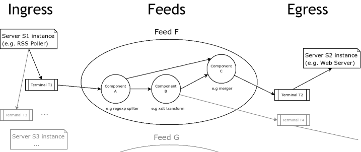
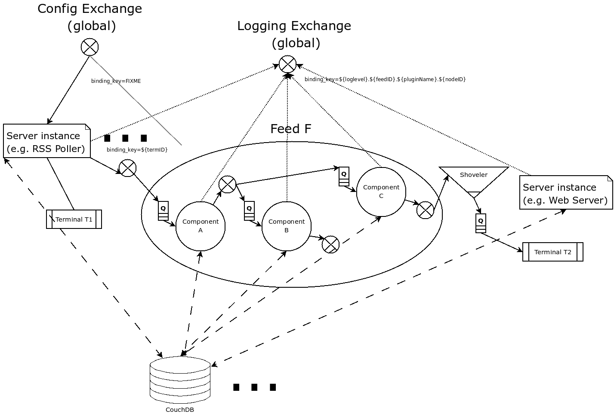

Feedshub is a stream based-architecture conceived to bring order and manageability to the BBC's massive and increasingly unwieldy feed infrastructre.
However the framework is very general and not limited to working with
Atom/RSS/… Feeds (for example binary data can be handled efficiently as
well). In a way you could think of Feedshub as a distributed, robust,
scalable, secure, user-friendly and manageable version of Unix pipes (you can
find more background and updates on the LShift blog).
//The
The basic logical building blocks are Sources and Sinks (Servers) of
data and Feeds (NB: Feed in this sense has nothing to do with RSS/Atom/etc.;
Processing Pipeline would be more accurate description) composed of
PipelineComponents which can route (e.g. based on regexp matches on Atom
feed entries) merge and transform the data in arbitrary ways (e.g. by applying
xslt transforms), as depicted below:

Flow of Information in Feedshub (simplified excerpt).
Servers as well as PipelineComponents (jointly referred to as Plugins)
can currently be written in Java, Python and Ruby (FIXME really?) and
require almost no boilerplate (see e.g. regexp_replace.py) Support for other
languages can be added straightforwardly by creating an appropriate Harness.
Robustness, scalability etc. are achieved through the "plumbing" layer which
is transparent to Plugin authors and (mostly) consists of the
Feedshub-specific Orchestrator (which takes care setting up all the wiring
between components) as well as two proven off-the-shelf RabbitMQ (the
messaging broker which provides high-performance, fault-tolerant queued
communication between components) and Apache's CouchDB (which
provides a store for configuration and persistent state for Plugins which
require it)1. (FIXME Erlang Blurp; e.g. supervisors)
make setup
This will attempt to download and install all required dependencies. At the
minute it assumes you are using a Linux distribution with `apt-get`; but
this is restricted to a small, easily replicated section of build
dependencies (the targets ending in -debs). Currently a couple of packages
(e.g. CouchDB and RabbitMQ) will be locally installed from sources in the
Feedshub directory, but in the future Feedshub will likely offer more
flexibility in this regard; just be aware of possible conflicts with
system-wide installs.
make all
There are three components which need to be running: RabbitMQ , CouchDB (the database used for configuration and per-component state), and the Orchestrator. RabbitMQ and CouchDB are together referred to as the "core" and must be started before the Orchestrator. The following is currently our preferred means to get everything up and running (Note: as the project matures this will become less fiddly and delicate, but for the moment make sure you follow the instructions exactly):
make listen_all
make stop_all_nox all cleandb start_core_nox && sleep 2 \ && ./setup-core.sh && sleep 1 && make start_orchestrator_nox \ && sleep 5 && python sbin/install_test_data.py \ && make start_orchestrator_nox
Note that if you already got a system install of couchDB or RabbitMQ etc. you should make sure that they are either currently not running or using different ports than the local versions that feedshub installs.
In general, Makefile targets that end in _nox (No X) will not
start new xterms.
All three components are normal Erlang shells (though due to
forwarding outputs over nc, the command history features are
lost). Thus to quit any of the components, enter q() and press
return in the shells. The Makefile targets take care of stopping the
components as necessary.
plugin.js // applies to both pipeline components and servers { "name": "Some Plugin description", "author": { "name": "John Doe", "email": "jondoe@example.tld" }, "type": "plugin-specification", "harness": "java", // or "python" or "ruby" "subtype": "pipeline_component", // or "server" "global_configuration_specification": [], // experimental, might disappear /* the configuration that must be provided per plugin instance */ "configuration_specification": [ { "name": "port", "label": "Port", "type": "Nat" } // ... ], /* configuration per terminal (terminal ONLY) */ "destination_specification": [ { "name": "title", "label": "Title for RSS", "type": "String" } // ... ], /* configuration per terminal (terminal ONLY) */ "source_specification": [ { "name": "url", "label": "URL of RSS", "type": "URL" } // ... ], /* configuration per feed component (feed_component ONLY) */ "inputs_specification": [ { "name": "input" } // ... ], /* configuration per feed component (feed_component ONLY) */ "outputs_specification": [ { "name": "output" } //... ], /* AWMS: again what's the point of this? Shouldn't this just be a bool? */ "database_specification": null // or {} initial values for the per instance db }
"configuration_specification": [
{"label": "Regexp",
"type": "string",
"name": "regexp"
},
*********
Servers) PipelineComponents Each environment (e.g., Java, Python) in which plugins run needs a harness. Minimally, this is simply a shell script that starts a plugin process given a plugin name.
The harness also provides some abstraction of the services needed by plugins; e.g., hooking up communications channels, storing documents. This abstraction – a base class, say – encapsulates the conventions for how plugins are initialised, communicated with, and so on, letting the plugin developer be concerned only with the specific task of the plugin.
The set of harness and plugin conventions is currently a moving target; however, in general, the Python and Java harnesses (and this document) will be kept up-to-date.
The type of the harness is indicated by the plugin descriptor
plugin.js in the plugin directory. The name is treated as a
directory under harness/, and the file run_plugin.sh in that
directory is invoked. The plugin configuration is then printed, as
JSON, to that process's stdin. For example, the file
plugins/xslt/plugin.js specifies the name of the harness as java
and so that plugin will be launched by the Orchestrator calling
run_plugin.sh in the directory harness/java.
The harness, then, must at least read the configuration, extract the
plugin name (and use it as a directory under plugins/), and run the
plugin code, supplying the configuration in an appropriate form. It
may also need to set environment variables, load modules, and so on.
Each harness will have its own convention for how to run a plugin
given its name. For example, the Python harness treats the plugin
name as the directory **and** as a module name, under which it (by
convention) expects to find a callable named run, which it invokes
with the arguments as a dictionary. It also puts the harness
directory on the PYTHON_PATH so that the plugin base class can be
imported, as well as lib/ in the plugin directory; and, it changes
the working directory to the plugin directory so that resources can be
loaded relative to that directory.
One of the first things that a harness must do, is to print out its
PID on STDOUT. This is picked up by the orchestrator, and used to
kill the plugin, should it be necessary to do so. Some programming
languages make it tricky to get hold of the PID and as a result, we
ask the shell script, run_plugin.sh to supply the PID as an
argument to the plugin harness. For example, the file
harness/java/run_plugin.sh contains:
exec java -cp feedshub_harness.jar net.lshift.feedshub.harness.Run $$
After the harness has printed out its PID, it should continue with
the startup of the plugin itself. It should also create a thread that
sits, blocking on its STDIN file descriptor, and as soon as that
file descriptor has been closed, the harness should terminate. This is
the preferred means through which the Orchestrator stops plugins.
The harness also provides convenience APIs for interacting with the system. In principle, following the invocation convention – e.g., for Python, providing a correctly-named module with a run(args) procedure – is enough. But many details of the configuration can be taken care of for the plugin developer.
An instance of the plugin may have configuration specific to that instance. (This is due to be tidied up)
This is supplied by the orchestrator, and should be exposed read-only to the plugin code.
The plugin descriptor, plugin.js, specifies named input and output
channels required by an instance of the plugin. E.g.,
… "inputs": [{"name": "in"}], "outputs": [{"name": "result"}], …
The orchestrator constructs input channels as AMQP queues, and output channels as AMQP exchanges. The names of these queues and exchanges are supplied as part of the initialisation configuration; e.g.,
… "inputs" : ["transformer_in"], "outputs" :["transformer_result] …
Note that the queue and exchange names will in general be arbitrary,
and that they are supplied in an ordered list. The harness must refer
to the plugin descriptor to match the queue or exchange to the named
channel. One way to think of this is that the plugin.js file
specifies the type, or class of the available connections to and from
the plugin, and the initialisation configuration contains instances of
these types or classes.
Giving the plugin programmer access to the channels in a convenient
way will depend on the capabilities of the environment. The Python
harness lets the plugin developer supply a maps of channel names to
method names; input channels use the named method as a callback, and
output channels are inserted into the object as methods. The Java
harness similarly uses reflection to attach Publisher objects to the
plugin's fields for outputs, and dynamically looks up inputs, where
the field names are the names of the channels given in the plugin.js
specification.
Because the STDOUT file descriptor of the plugin is captured by the
Orchestrator, it is not recommended to output text or debugging
information though simply printing messages out. Instead, an
independent notification exchange is provided to which messages can be
sent. This exchange is called feedshub/log and is not supplied in
the initialisation configuration. This is a topic exchange, and so the
messages must have a routing key. The routing key should be
loglevel.feedID.pluginName.nodeID where loglevel is one of debug,
info, warn, error, fatal, and the three other components take
the values supplied in the corresponding fields in the initialisation
configuration. By using this scheme, it (currently potentially) allows
the orchestrator to filter and select messages.
The harness should try and present a suitable API to the plugin such that the plugin has the ability to send such informational messages. Both the Python and Java harnesses have methods for each of the five different log levels, filling in the other components of routing key automatically, and including any message supplied.
Additionally, the harness should try and catch any errors that the
plugin produces, sending such messages out on this exchange. Messages
should be marked with delivery mode 2 (or persistent) to make sure
messages are not lost. We recommend using a separate AMQP channel for
this exchange so that if you wish to treat messages sent by the plugin
in its normal course of operation as transactional, then this does not
force notification messages to also become transactional.
A plugin instance gets a document in which to store its running state. This state will persist over restarts, and will be visible to management interfaces. It should be exposed as read-write.
TODO Avoiding conflicts – maybe the state is the argument and result of any callback (and these are serialised)?
The plugin descriptor can also specify a storage database private to each instance. The orchestrator provides the name of this database in the initialisation configuration.
TODO safe ways of exposing this to the plugin developer.

Information flow (the /almost/ full picture)
1 FIXME the aim is to just provide abstract interfaces to generic
database and messaging services to Plugin writers but this isn't fully the
case presently.
Date: 2009-05-22 Fri
HTML generated by org-mode 6.21b in emacs 23